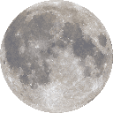

Helsinki
Finland
--°
Brewing the forecast…
- Feels like --°
- Wind -- m/s
- Humidity --%
- Rain -- mm
Purrrr... let me check the sky.
Next 24 hours
Tonight's moon

…
↑ -- ↓ --
Kitty's card of the day
Your card of the day
Shuffling the deck…
Witch's almanac
- Sun in …
- Moon in …
- …